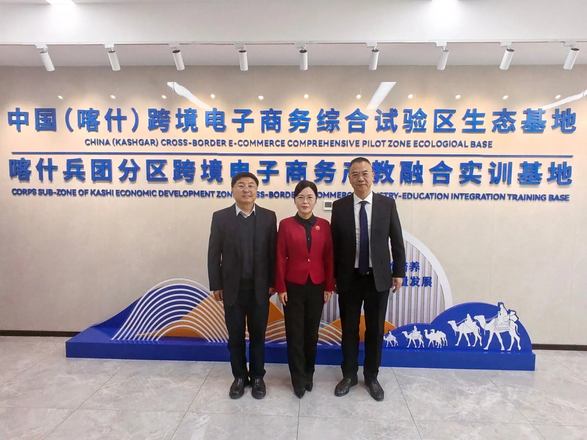
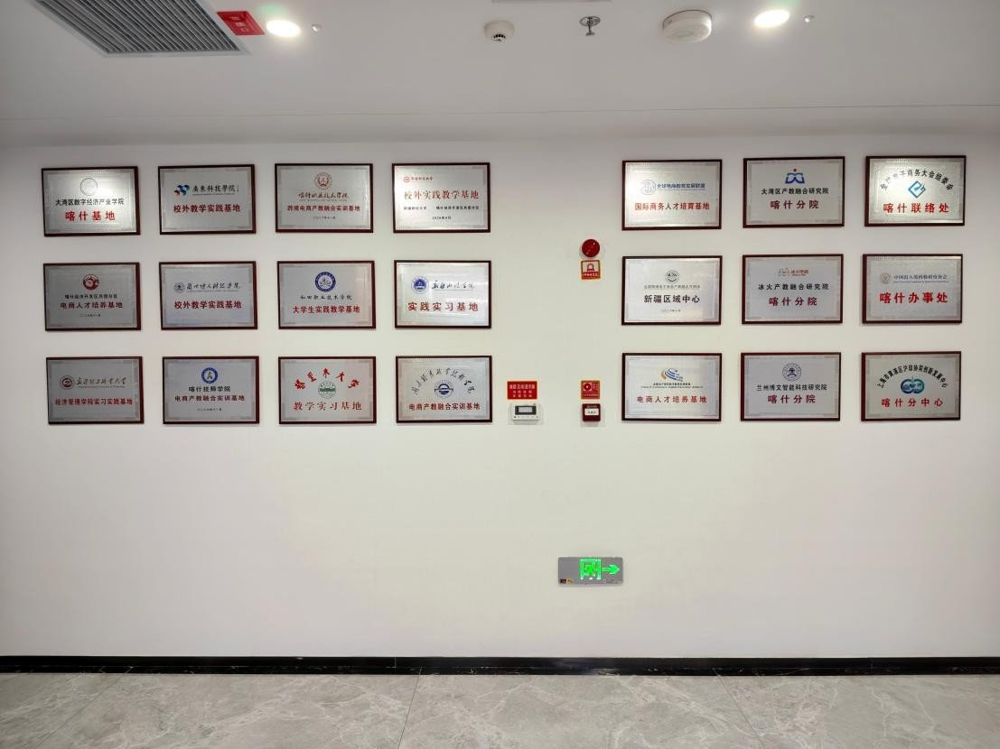
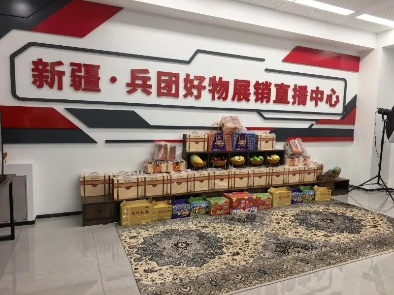
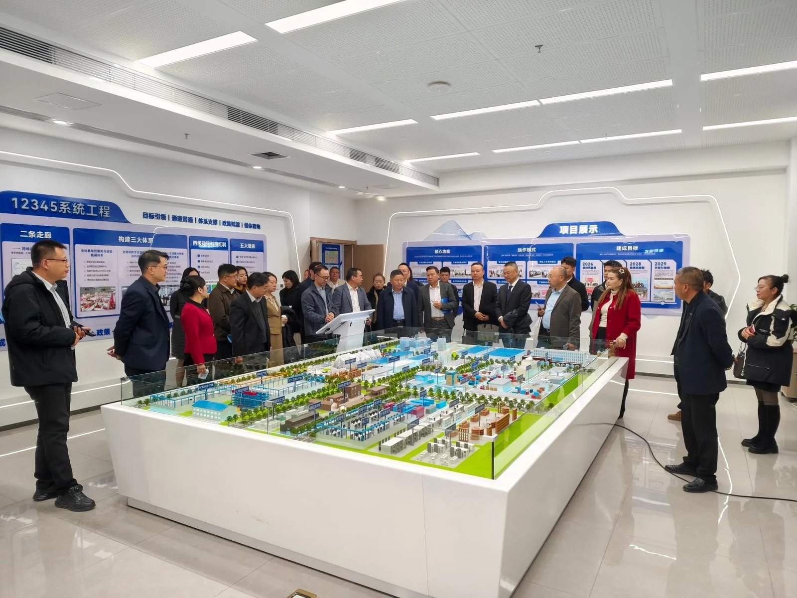
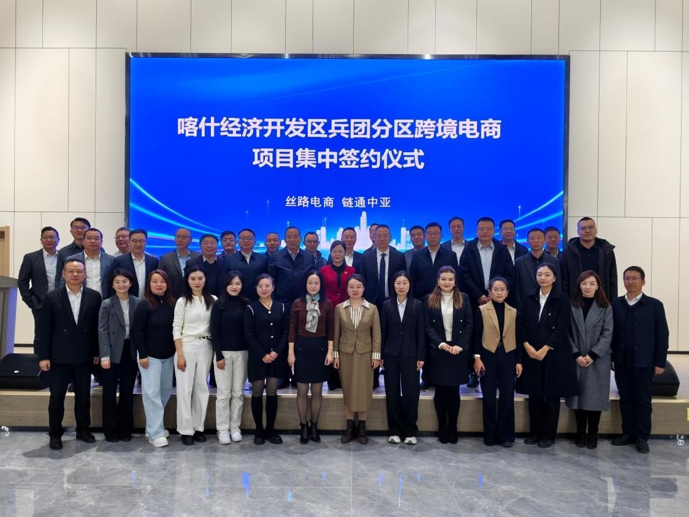

11 月 20 日，由广东科技学院、广东博思云科教技术有限公司承建的中国（喀什）跨境电子商务综合试验区生态基地、喀什兵团分区跨境电子商务产教融合实训基地正式启用。同日下午，招商引资项目集中签约仪式在喀什经济开发区兵团分区粤兵跨境贸易服务中心举行。随着"CBEZ跨境电商产业学院"从广东复制到南疆，大湾区的产业资源与教育资源首次成体系落地喀什。
这不是一次单独的挂牌。双基地启用、产业学院跨区域布点、企业项目集中签约在同一天发生，指向的是同一件事：把大湾区已经跑通的跨境电商产教模式，整体搬到向西开放的前沿。

一、双基地同日启用，成为喀什首个跨境电商综合公共服务平台
此次启用的中国（喀什）跨境电子商务综合试验区生态基地与喀什兵团分区跨境电子商务产教融合实训基地，是喀什地区首个跨境电商综合公共服务平台。平台旨在通过产教融合打造跨境电商人才与产业聚集区，推进粤兵协作，为中国（喀什）跨境电子商务综合试验区、新疆自贸试验区喀什片区、喀什经济开发区和兵团分区跨境贸易产业园的人才培养与 OPC 创业孵化提供服务。
作为全国跨境电子商务产教融合共同体的核心载体，首个 CBEZ 跨境电商产业学院设在广东东莞的广东科技学院，喀什基地是第二个布点。此次南疆布局复制东莞模式，同步在喀什职业技术学院、喀什技师学院等本地院校开展跨境电商培训项目，以企业导师授课、实战化项目训练、教练式陪跑为特色，把大湾区行业一线的运营经验与真实业务场景引入课堂。

二、功能布局：三个直播中心与一座跨境通关沙盘
基地一期工程建有三个展示直播中心、一个跨境通关沙盘展示中心、一个 OPC 孵化中心及两间专属培训室，形成从产品展示、直播销售到通关实训、创业孵化的功能链条。
三个展示直播中心分别为大湾区优品展销直播中心、中亚南亚国家优品展销直播中心与新疆·兵团好物展销直播中心，分别对接大湾区制造能力、中亚南亚市场需求与本地特色产品，为入驻企业和院校提供真实的直播运营场景。

跨境通关沙盘展示中心以沙盘还原报关、查验、仓储、物流等通关环节，用于学员实训和企业业务演练；OPC 孵化中心面向个人电商创业者，提供从选品、开店到运营回款的实操支持；两间培训室承接常态化授课与实战训练。

三、考察与集中签约，湾区企业与院校齐聚喀什
11 月 20 日上午，大湾区企业家代表团考察了喀什经济社会发展情况。下午，招商引资项目集中签约仪式在粤兵跨境贸易服务中心举行。图木舒克市人大常委会副主任、兵团分区党工委副书记、管委会常务副主任张海宁，第三师图木舒克市商务局、工信局与兵团分区招商局、自贸局、经济发展局、高盛公司负责人出席签约仪式。
广东科技学院副校长、博思云公司联合总裁陈标新与来自大湾区的阿里巴巴跨境电商服务中心、佛山冰火电子商务有限公司、东莞市斯乐克电子科技有限公司等 20 余家企业代表，以及兰州博文科技学院、和田职业技术学院、图木舒克职业技术学院、喀什职业技术学院、喀什技师学院等院校领导参加活动。活动由喀什兵团分区管委会主办，兵团分区管委会副主任何庚主持。
本次签约聚焦跨境电商、供应链服务与产教融合等领域，签约企业业务贯穿研发制造、货源组织、平台运营、内容营销、跨境物流仓配等环节，进一步补全兵团分区跨境电商产业链条。

四、从大湾区到南疆，一套可复制的产教融合模式
CBEZ 跨境电商产业学院从东莞走向喀什，是大湾区产教资源向西输出的一次实践。广东科技学院与博思云公司以产业学院与实训基地为载体，把企业岗位标准转化为课程与考核体系，把大湾区产业一线的师资引入喀什教学，并打通竞赛、技能认证、就业与出海实践的对接通道。
对数字经济而言，这里的关键不只是建了一座基地，而是把"产业需求—课程内容—实训场景—创业孵化"串成了闭环。展示直播中心解决货从哪里来、怎么卖的问题，通关沙盘解决流程怎么走的问题，OPC 孵化中心解决个人创业者如何从零起步的问题，院校承担持续的人才供给。四个环节放在同一空间里，教育与产业的时差被压缩。
趋势判断：从单点基地走向跨区域协同网络
其一，产业学院的跨区域复制会成为常态。当一套课程体系、师资标准和实训场景在东莞跑通，向喀什复制的边际成本明显低于从零建设。面向中亚、南亚市场的业务扩张，会继续拉动这类"湾区研发＋南疆落地"的组合。
其二，公共服务平台的价值取决于运转频率。基地能否持续产生培训人数、孵化店铺和真实订单，比场地规模更重要。随着签约项目落地，平台需要从活动型载体转向常态化服务载体。
其三，人才就地培育将支撑向西开放的产业纵深。跨境电商在喀什的扩张长期受制于实操人才供给半径，本地院校与基地承接培养职能，企业不再需要远距离引进成熟运营人员，产业链与人才链得以同步推进。
结语
双基地启用与项目签约集中在同一天，说明大湾区资源与南疆区位的结合已经从倡议进入实施阶段。接下来真正需要观察的，是这批课程、师资与项目能否在喀什持续运转，并转化为面向中亚、欧亚市场的产业能力。